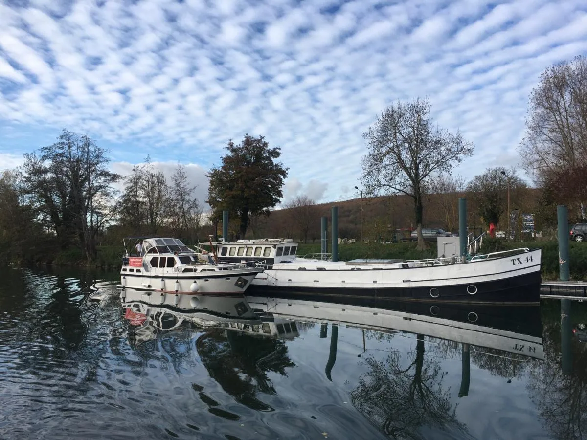

Accompagnement à l'achat d'un bateau
Vous voulez acheter un bateau ? RivesEnRêves vous accompagne grâce à son expertise technique et nautique, pour vous guider en toute neutralité, loin de la simple démarche commerciale. Un conseil sur mesure, fondé sur des années de navigation, pour acheter le bon bateau en toute confiance.

Un conseil neutre, pas une démarche commerciale
Notre rôle n'est pas de vous convaincre, mais de vous éclairer : nous vous disons ce que nous pensons vraiment d'un bateau, de ses qualités comme de ses défauts.
- Votre projet
Usage, voie d'eau, nombre de personnes, budget : nous définissons ensemble le bateau qu'il vous faut.
- La sélection
Nous vous présentons des bateaux adaptés, y compris ceux que nous accompagnons et connaissons bien.
- La visite technique
Coque, moteur, électricité, équipements, papiers : un regard d'expert sur l'état réel du bateau.
- L'essai sur l'eau
Une navigation ensemble pour juger du comportement du bateau et de sa prise en main.
- Les démarches et la suite
Formalités, convoyage jusqu'à son port d'attache, conseils pour vos premières navigations.
Pourquoi nous faire confiance ?
- Des années de navigation sur la quasi-totalité des fleuves et canaux français, sur une très grande diversité de bateaux.
- Un commandant qualifié : permis fluvial, mer côtier, extension grande plaisance, attestation spéciale passagers.
- Une connaissance concrète des bateaux : exploitation, convoyage, renflouement, entretien.
- Une référence : nous avons trouvé aux Pays-Bas La Billebaude pour la Communauté de communes de Pouilly-Bligny, et l'avons acheminée jusqu'au Canal de Bourgogne.
Pour qui ?
- Les particuliers qui achètent leur premier bateau ou changent de bateau.
- Les associations et entreprises qui cherchent un bateau pour leur activité.
- Les collectivités qui souhaitent s'équiper d'un bateau à passagers (voir notre accompagnement des collectivités).
Les bateaux que nous accompagnons
Des bateaux que nous connaissons, présentés avec un avis franc sur leur état et leurs usages. Chaque fiche détaille le bateau ; contactez-nous pour une visite ou un essai.
Notre sélection du moment
Notre sélection évolue régulièrement. Contactez-nous : nous vous présentons les bateaux que nous accompagnons en ce moment et qui correspondent à votre projet.
Questions fréquentes
Pourquoi se faire accompagner pour acheter un bateau ?
Un bateau d'occasion cache souvent des points qu'un acheteur non averti ne voit pas : état de la coque, motorisation, électricité, titres de navigation, adéquation avec la voie d'eau visée. RivesEnRêves met son expertise technique et nautique à votre service pour vous aider à décider en connaissance de cause.
Votre accompagnement est-il neutre ?
Oui. Notre rôle est de vous conseiller, pas de vous vendre un bateau : nous vous disons ce que nous pensons d'un bateau, de ses points forts comme de ses défauts, et s'il correspond vraiment à votre projet.
Proposez-vous des bateaux ?
Oui : nous accompagnons régulièrement des bateaux que nous connaissons bien. Vous les trouverez sur cette page ; contactez-nous pour en savoir plus ou pour un essai.
Pouvez-vous convoyer le bateau après l'achat ?
Oui. Une fois le bateau acheté, RivesEnRêves peut le convoyer jusqu'à son port d'attache ou jusqu'à un chantier, démarches administratives comprises, et vous aider à sa prise en main.
Un projet d'achat de bateau ?
Décrivez-nous votre projet : usage, voie d'eau, budget. Nous vous conseillons en toute neutralité.